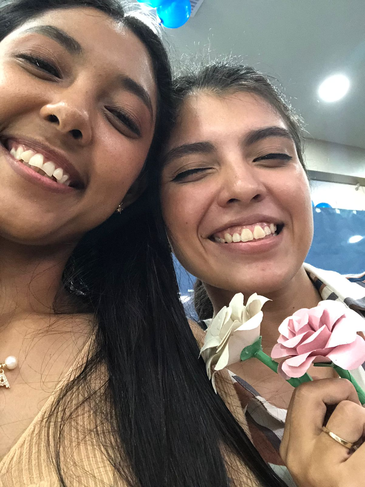

Un amor deseado...
Deseaba en mi vida un amor como el tuyo, sincero y decidido.
A pesar de que muchas cosas al inicio fueron dificiles de entender o mas que todo aceptar, estoy muy agradecida por ser yo quien puede recibir tu amor tan grande y hermoso.
Nuestro primer mes!

Decidi hacerte este tipo de carta, porque se me es muy dificil a veces poder expresarte todo lo que siento y pienso, y dije pues que mejor forma de hacerlo, que con lo que me gusta! así que decidi usar la programación para darte esta sorpresa..
El aceptar que entraras en mi vida ha sido mi mejor decisión. Sabes, acepto una vez más que si me ponia celosa no solo por una amistad, sentia cosas lindas por ti pero pensaba "que tal y tus piropos solo eran en buena onda y no porque en realidad te gustara" jijiji.
Más sin embargo han sido 2 años de muchass emociones, tanto lindas, como no tan lindas! Aun así no me arrepiento de nada contigo amor mío... Eres y siempre seras el amor de mi vida, con quien quiero estar siempre
Creo que fue la primera vez que me demostraste que estabas celosa
Gracias por ser tan paciente conmigo, por entenderme, por apoyarme aun con todas mis emociones y por hacerme sentir tan especial y amada cada día. Eres mi compañera de vida y mi confidente.
Te amo con todo mi corazón y estoy emocionada por todos los momentos que aún nos esperan. Gracias por ser tú, por ser mi amor y por hacerme la persona más feliz del mundo.
Llegaste a mi vida en el momento justo, cuando más te necesitaba. Eres mi luz en los días oscuros y mi alegría constante. No puedo esperar para seguir construyendo nuestro futuro juntas, lleno de amor, risas y aventuras, porque sé que mientras estemos juntas, todo será posible, y si te preguntas si imagino y deseo un futuro contigo, la respuesta es un rotundo SI!